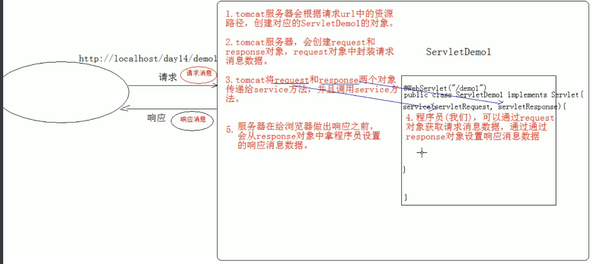

# Servlet
# 概念
- 概念：运行在服务器端的小程序
- Servlet 就是一个接口，定义了 Java 类被浏览器访问到 (tomcat 识别) 的规则。
- 将来我们自定义一个类，实现 Servlet 接口，复写方法。
# 快速入门
创建 JavaEE 项目
定义一个类，实现 Servlet 接口
- public class ServletDemo1 implements Servlet
实现接口中的抽象方法
配置 Servlet
在web.xml中配置：
<!-- 配置 Servlet --><servlet><servlet-name>demo1</servlet-name>
<servlet-class>cn.itcast.web.servlet.ServletDemo1</servlet-class>
</servlet><servlet-mapping><servlet-name>demo1</servlet-name>
<url-pattern>/demo1</url-pattern>
</servlet-mapping>
# 执行原理
- 当服务器接受到客户端浏览器的请求后，会解析请求 URL 路径，获取访问的 Servlet 的资源路径
- 查找 web.xml 文件，是否有对应的 <url-pattern> 标签体内容。
- 如果有，则在找到对应的 <servlet-class> 全类名
- tomcat 会将字节码文件加载进内存，并且创建其对象
- 调用其方法
# 生命周期
被创建：执行 init 方法，只执行一次
Servlet 什么时候被创建？
默认情况下，第一次被访问时，Servlet 被创建
可以配置执行 Servlet 的创建时机。在 <servlet> 标签下配置
第一次被访问时，创建
- <load-on-startup> 的值为负数
在服务器启动时，创建
- <load-on-startup> 的值为 0 或正整数
- Servlet 的 init 方法，只执行一次，说明一个 Servlet 在内存中只存在一个对象，Servlet 是单例的
- 多个用户同时访问时，可能存在线程安全问题。
- 解决：尽量不要在 Servlet 中定义成员变量。即使定义了成员变量，也不要对修改值
提供服务：执行 service 方法，执行多次
每次访问 Servlet 时，Service 方法都会被调用一次。
被销毁：执行 destroy 方法，只执行一次
- Servlet 被销毁时执行。服务器关闭时，Servlet 被销毁
- 只有服务器正常关闭时，才会执行 destroy 方法。
- destroy 方法在 Servlet 被销毁之前执行，一般用于释放资源
# Servlet3.0
- 好处：
支持注解配置。可以不需要 web.xml 了。
步骤：
- 创建 JavaEE 项目，选择 Servlet 的版本 3.0 以上，可以不创建 web.xml
- 定义一个类，实现 Servlet 接口
- 复写方法
- 在类上使用 @WebServlet 注解，进行配置
@WebServlet("资源路径") | |
@Target({ElementType.TYPE}) | |
@Retention(RetentionPolicy.RUNTIME) | |
@Documented | |
public @interface WebServlet { | |
String name() default "";//相当于<Servlet-name> | |
String[] value() default {};//代表urlPatterns()属性配置 | |
String[] urlPatterns() default {};//相当于<url-pattern> | |
int loadOnStartup() default -1;//相当于<load-on-startup> | |
WebInitParam[] initParams() default {}; | |
boolean asyncSupported() default false; | |
String smallIcon() default ""; | |
String largeIcon() default ""; | |
String description() default ""; | |
String displayName() default ""; | |
} |
注意；form 标签中的 action 属性用于指定表单数据提交到哪个 URL 地址
# Servlet 的体系结构
Servlet -- 接口 | |
| | |
GenericServlet -- 抽象类 | |
| | |
HttpServlet -- 抽象类 | |
* GenericServlet：将Servlet接口中其他的方法做了默认空实现，只将service()方法作为抽象 | |
* 将来定义Servlet类时，可以继承GenericServlet，实现service()方法即可 | |
* HttpServlet：对http协议的一种封装，简化操作 | |
1. 定义类继承HttpServlet | |
2. 复写doGet/doPost方法 |
# Servlet 相关配置
- urlpartten:Servlet 访问路径
- 一个 Servlet 可以定义多个访问路径 ： @WebServlet ({"/d4","/dd4","/ddd4"})
- 路径定义规则：
- /xxx：路径匹配
- /xxx/xxx: 多层路径，目录结构
- *.do：扩展名匹配.(不加 /)
# HTTP
# 概念
Hyper Text Transfer Protocol 超文本传输协议
- 传输协议：定义了，客户端和服务器端通信时，发送数据的格式
- 特点：
- 基于 TCP/IP 的高级协议
- 默认端口号：80
- 基于请求 / 响应模型的：一次请求对应一次响应
- 无状态的：每次请求之间相互独立，不能交互数据
- 历史版本：
- 1.0：每一次请求响应都会建立新的连接
- 1.1：复用连接
# 请求消息数据格式
# 请求行
请求方式 请求 url 请求协议 / 版本
GET /login.html HTTP/1.1
- 请求方式：
- HTTP 协议有 7 中请求方式，常用的有 2 种
- GET：
- 请求参数在请求行中，在 url 后。
- 请求的 url 长度有限制的
- 不太安全
- POST：
- 请求参数在请求体中
- 请求的 url 长度没有限制的
- 相对安全
- GET：
- HTTP 协议有 7 中请求方式，常用的有 2 种
# 请求头
客户端浏览器告诉服务器一些信息
请求头名称：请求头值
- 常见的请求头：
User-Agent：浏览器告诉服务器，我访问你使用的浏览器版本信息
- 可以在服务器端获取该头的信息，解决浏览器的兼容性问题
Referer：http://localhost/login.html
- 告诉服务器，我 (当前请求) 从哪里来？
- 作用：
- 防盗链：
- 统计工作：
- 作用：
- 告诉服务器，我 (当前请求) 从哪里来？
# 请求空行
空行，就是用于分割 POST 请求的请求头，和请求体的。
# 请求体 (正文)
* 封装POST请求消息的请求参数的
* 响应消息数据格式
字符串格式： | |
POST /login.html HTTP/1.1 | |
Host: localhost | |
User-Agent: Mozilla/5.0 (Windows NT 6.1; Win64; x64; rv:60.0) Gecko/20100101 Firefox/60.0 | |
Accept: text/html,application/xhtml+xml,application/xml;q=0.9,*/*;q=0.8 | |
Accept-Language: zh-CN,zh;q=0.8,zh-TW;q=0.7,zh-HK;q=0.5,en-US;q=0.3,en;q=0.2 | |
Accept-Encoding: gzip, deflate | |
Referer: http://localhost/login.html | |
Connection: keep-alive | |
Upgrade-Insecure-Requests: 1 | |
username=zhangsan |
# Request
# request 对象和 response 对象的原理
- request 和 response 对象是由服务器创建的。我们来使用它们
- request 对象是来获取请求消息，response 对象是来设置响应消息
# request 对象继承体系结构
ServletRequest -- 接口
| 继承
HttpServletRequest -- 接口
| 实现
org.apache.catalina.connector.RequestFacade 类 (tomcat)
# request 功能
# 获取请求消息数据
# 获取请求行数据
GET /day14/demo1?name=zhangsan HTTP/1.1
方法：
- 获取请求方式 ：GET
String getMethod() - (*) 获取虚拟目录：/day14
String getContextPath() - 获取 Servlet 路径: /demo1
String getServletPath() - 获取 get 方式请求参数：name=zhangsan
String getQueryString() - (*) 获取请求 URI：/day14/demo1
String getRequestURI(): /day14/demo1
StringBuffer getRequestURL() :http://localhost/day14/demo1
URL: 统一资源定位符 ： http://localhost/day14/demo1 中华人民共和国
URI：统一资源标识符 : /day14/demo1 共和国获取协议及版本：HTTP/1.1
String getProtocol()获取客户机的 IP 地址：
String getRemoteAddr()
- 获取请求方式 ：GET
# 获取请求头数据
- 方法：
- (*) String getHeader (String name): 通过请求头的名称获取请求头的值
- Enumeration<String> getHeaderNames (): 获取所有的请求头名称
# 获取请求体数据
- 请求体：只有 POST 请求方式，才有请求体，在请求体中封装了 POST 请求的请求参数
- 步骤：
获取流对象
- BufferedReader getReader ()：获取字符输入流，只能操作字符数据
- ServletInputStream getInputStream ()：获取字节输入流，可以操作所有类型数据
- 在文件上传知识点后讲解
再从流对象中拿数据

# 其他功能
- 获取请求参数通用方式：不论 get 还是 post 请求方式都可以使用下列方法来获取请求参数
- String getParameter (String name): 根据参数名称获取参数值 username=zs&password=123
2. String [] getParameterValues (String name): 根据参数名称获取参数值的数组 hobby=xx&hobby=game
3. Enumeration<String> getParameterNames (): 获取所有请求的参数名称
4. Map<String,String []> getParameterMap (): 获取所有参数的 map 集合- 中文乱码问题：
- get 方式：tomcat 8 已经将 get 方式乱码问题解决了
- post 方式：会乱码
- 解决：在获取参数前，设置 request 的编码 request.setCharacterEncoding ("utf-8");
- 中文乱码问题：
- String getParameter (String name): 根据参数名称获取参数值 username=zs&password=123
# 请求转发
一种在服务器内部的资源跳转方式
步骤：
- 通过 request 对象获取请求转发器对象：RequestDispatcher getRequestDispatcher (String path)
- 使用 RequestDispatcher 对象来进行转发：forward (ServletRequest request, ServletResponse response)
特点：
浏览器地址栏路径不发生变化
只能转发到当前服务器内部资源中。
转发是一次请求
共享数据：
- 域对象：一个有作用范围的对象，可以在范围内共享数据
- request 域：代表一次请求的范围，一般用于请求转发的多个资源中共享数据
- 方法：
- void setAttribute (String name,Object obj): 存储数据
- Object getAttitude (String name): 通过键获取值
- void removeAttribute (String name): 通过键移除键值对
获取 ServletContext：
- ServletContext getServletContext()
# 案例：用户登录
用户登录案例需求：（见例题）
1.编写login.html登录页面
username & password 两个输入框
2. 使用Druid数据库连接池技术,操作mysql，day14数据库中user表
3. 使用JdbcTemplate技术封装JDBC
4. 登录成功跳转到SuccessServlet展示：登录成功！用户名,欢迎您
5. 登录失败跳转到FailServlet展示：登录失败，用户名或密码错误
# BeanUtils 工具类
简化数据封装，用于封装 JavaBean 的
- JavaBean：标准的 Java 类
要求：
类必须被 public 修饰
必须提供空参的构造器
成员变量必须使用 private 修饰
提供公共 setter 和 getter 方法
功能：封装数据
概念：
成员变量： 属性：setter 和 getter 方法截取后的产物
例如：getUsername () --> Username--> username方法：
1. setProperty()
2. getProperty()
3. populate (Object obj , Map map): 将 map 集合的键值对信息，封装到对应的 JavaBean 对象中
# HTTP 协议
# 请求消息
客户端发送给服务器端的数据
- 数据格式：
- 请求行
- 请求头
- 请求空行
- 请求体
# 响应消息
服务器端发送给客户端的数据
# 响应行
- 组成：协议 / 版本 响应状态码 状态码描述
- 响应状态码：服务器告诉客户端浏览器本次请求和响应的一个状态。
- 状态码都是 3 位数字
- 分类：
- 1xx：服务器就收客户端消息，但没有接受完成，等待一段时间后，发送 1xx 多状态码
- 2xx：成功。代表：200
- 3xx：重定向。代表：302 (重定向)，304 (访问缓存)
- 4xx：客户端错误。
- 代表：
- 404（请求路径没有对应的资源）
- 405：请求方式没有对应的 doXxx 方法
- 代表：
- 5xx：服务器端错误。代表：500 (服务器内部出现异常)
# 响应头
格式：头名称： 值
常见的响应头：
Content-Type：服务器告诉客户端本次响应体数据格式以及编码格式
Content-disposition：服务器告诉客户端以什么格式打开响应体数据
- 值：
- in-line: 默认值，在当前页面内打开
- attachment;filename=xxx：以附件形式打开响应体。文件下载
- 值：
# 响应空行
# 响应体
传输的数据
响应字符串格式 | |
HTTP/1.1 200 OK | |
Content-Type: text/html;charset=UTF-8 | |
Content-Length: 101 | |
Date: Wed, 06 Jun 2018 07:08:42 GMT | |
<html> | |
<head> | |
<title>$Title$</title> | |
</head> | |
<body> | |
hello , response | |
</body> | |
</html> |
# Response 对象
# 功能：设置响应消息
# 设置响应行
- 格式：HTTP/1.1 200 ok
- 设置状态码：setStatus (int sc)
# 设置响应头
setHeader(String name, String value)
# 设置响应体
使用步骤：
获取输出流
字符输出流：PrintWriter getWriter ()
字节输出流：ServletOutputStream getOutputStream ()
使用输出流，将数据输出到客户端浏览器
# 案例
# 完成重定向
重定向：资源跳转的方式
代码实现：
设置状态码为 302
response.setStatus(302);
设置响应头 location
response.setHeader("location","/day15/responseDemo2");
简单的重定向方法
response.sendRedirect ("/day15/responseDemo2");转发的特点：forward
- 转发地址栏路径不变
- 转发只能访问当前服务器下的资源
- 转发是一次请求，可以使用 request 对象来共享数据
forward 和 redirect 区别
路径写法：
路径分类
相对路径：通过相对路径不可以确定唯一资源
如：./index.html
不以 / 开头，以。开头路径
规则：找到当前资源和目标资源之间的相对位置关系
- ./：当前目录
- ../: 后退一级目录
绝对路径：通过绝对路径可以确定唯一资源
如：http://localhost/day15/responseDemo2
以 / 开头的路径
规则：判断定义的路径是给谁用的？判断请求将来从哪儿发出
- 给客户端浏览器使用：需要加虚拟目录 (项目的访问路径)
- 建议虚拟目录动态获取：request.getContextPath ()
- <a> , <form> 重定向...
- 给服务器使用：不需要加虚拟目录
- 转发路径
- 给客户端浏览器使用：需要加虚拟目录 (项目的访问路径)
# 服务器输出字符数据到浏览器
步骤：
获取字符输出流
输出数据
注意：
* 乱码问题：
1. PrintWriter pw = response.getWriter (); 获取的流的默认编码是 ISO-8859-1
2. 设置该流的默认编码
3. 告诉浏览器响应体使用的编码//简单的形式，设置编码，是在获取流之前设置 response.setContentType("text/html;charset=utf-8");
# 服务器输出字节数据到浏览器
- 步骤：
- 获取字节输出流
- 输出数据
# 验证码
- 本质：图片
- 目的：防止恶意表单注册
# ServletContext 对象
# 概念
- 概念：代表整个 web 应用，可以和程序的容器 (服务器) 来通信
- 获取：
- 通过 request 对象获取
request.getServletContext (); - 通过 HttpServlet 获取
this.getServletContext ();
- 通过 request 对象获取
- 功能：
获取 MIME 类型：
MIME 类型：在互联网通信过程中定义的一种文件数据类型
- 格式： 大类型 / 小类型 text/html image/jpeg
获取：String getMimeType (String file)
域对象：共享数据
- setAttribute(String name,Object value)
- getAttribute(String name)
- removeAttribute(String name)
- ServletContext 对象范围：所有用户所有请求的数据
获取文件的真实 (服务器) 路径
方法：String getRealPath (String path)
String b = context.getRealPath ("/b.txt");//web 目录下资源访问
System.out.println (b);String c = context.getRealPath ("/WEB-INF/c.txt");//WEB-INF 目录下的资源访问
System.out.println (c);String a = context.getRealPath ("/WEB-INF/classes/a.txt");//src 目录下的资源访问
System.out.println (a);
# 案例
* 文件下载需求： | |
1. 页面显示超链接 | |
2. 点击超链接后弹出下载提示框 | |
3. 完成图片文件下载 | |
* 分析： | |
1. 超链接指向的资源如果能够被浏览器解析，则在浏览器中展示，如果不能解析，则弹出下载提示框。不满足需求 | |
2. 任何资源都必须弹出下载提示框 | |
3. 使用响应头设置资源的打开方式： | |
* content-disposition:attachment;filename=xxx | |
* 步骤： | |
1. 定义页面，编辑超链接href属性，指向Servlet，传递资源名称filename | |
2. 定义Servlet | |
1. 获取文件名称 | |
2. 使用字节输入流加载文件进内存 | |
3. 指定response的响应头： content-disposition:attachment;filename=xxx | |
4. 将数据写出到response输出流 |